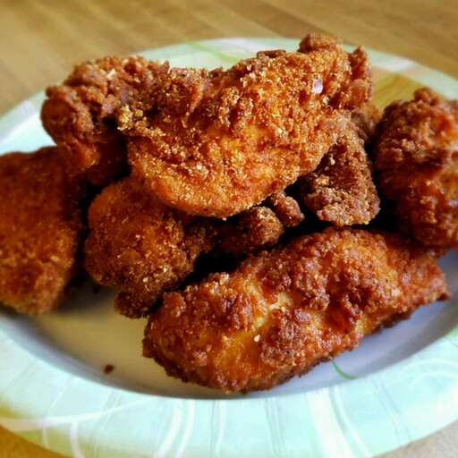

Fried Chicken
- Fried Chicken
- The nutrition data for this recipe includes the full amount of the breading ingredients.
The actual amount of the breading consumed will vary.
We have determined the nutritional value of oil for frying based on a retention value of
10% after cooking. The exact amount will vary depending on cooking time and temperature,
ingredient density, and the specific type of oil used.

Ingredients
- 30 saltine crackers
- 2 tablespoons all-purpose flour
- 2 tablespoons dry potato flakes
- 1 teaspoon seasoned salt
- ½ teaspoon ground black pepper
- 1 egg
- 6 skinless, boneless chicken breast halves
- 2 cups vegetable oil for frying
Steps
- Place crackers in a large resealable plastic bag; seal bag and crush crackers with a rolling pin until they are coarse crumbs. Add the flour, potato flakes, seasoned salt, and pepper and mix well.
- Beat egg in a shallow dish or bowl. One by one, dredge chicken pieces in egg, then place in bag with crumb mixture. Seal bag and shake to coat.
- Heat oil in a deep-fryer or large saucepan to 350 degrees F (175 degrees C).
- Fry chicken, turning frequently, until golden brown and juices run clear, 15 to 20 minutes.